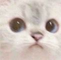
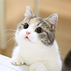
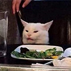

매우 재미있는 가짜 뉴스 만들기
ddd

슈뢰딩거의 상자가 맘에 들었을때 그 고양이는 그 상자에 들어갈 것 인가?
2021.05.07
양자역학이 이제 막 탄생되었던 1935년, 오스트리아 비엔나 출신의 과학자인 에르빈 슈뢰딩거는 양자역학의 피상적인 면에 회의감을 갖고 알베르트 아인슈타인과의 토론 끝에 현재 '슈뢰딩거의 고양이'라고 불리는 한 사고 실험을 제안했다. 이 실험은 원래 양자역학의 피상적인 면을 비판하기 위해 만들어졌는데, 아이러니하게도 시간이 지나자 양자역학을 묘사하는 가장 대표적인 사고실험이 되어버렸다

어째서 우리는 돈을 아껴서야하는가? 그냥 맘이 가는데로 쓰면 되는거 아닌가?
2021.04.09
경제학이란, 재화(goods)와 용역(services)의 생산과 분배, 소비에 관한 전반적인 경제 현상을 분석하고 연구하는 학문이다. '경제학'은 영어의 'economics', 그리스어의 'οἰκονομία'를 번역한 말이다. 한자어 경제는 경세제민(經世濟民)의 줄임말인데 이는 '세상일을 잘 다스려 도탄에 빠진 백성을 구함'이라는 의미이다. 반면 그리스어 어원은 '집, 가정'을 뜻하는 'oikos'와 '규칙 혹은 법'을 뜻하는 'nomos'의 합성으로서 'management of a household', 즉 가정을 잘 꾸리는 방법을 뜻했으나 시간의 흐름과 번역을 거쳐 경세제민으로 그 의미가 확장된 것이라 할 수 있다.

충격 기괴 공포, 이 밈의 고양이는 사실 앞에 있는 여자을 본 적이 없다!
2021.04.09
좌측의 여성 사진은 2011년에 방영된 리얼리티 예능 《베벌리힐스의 진짜 주부들》(Real Housewives of Beverly Hills) 14회의 한 장면이다. 가정폭력을 당했던 여성이 가해자에게 소리치지만, 주변 사람들이 아무도 여성의 주장을 믿지 않고 여성을 붙잡고 말리는 장면이다. 헌데 위 영상을 보면 우측의 흰 고양이가 등장하는 장면은 없다. 사진의 고양이는 스머지(Smudge)란 이름의 고양이로# Know Your Meme 에 따르면# 전혀 관련 없는 두 짤이 엮이게 된 것은 2019년 5월 1일에 트위터에서 한 유저가 "These photos together is making me lose it"(이 사진들이 같이 있어서 미친듯이 웃겼어) 라는 내용과 함께 이러한 사진을 올린 것이 시초였다. 이를 다른 트위터 유저가 사진 안에 글을 적어 드립을 치는 것으로 트위터에 전파된 것이 계기가 되어 나중에 레딧에서 이 짤방이 알려져 밈으로 부상하게 된다.
{kind=link}